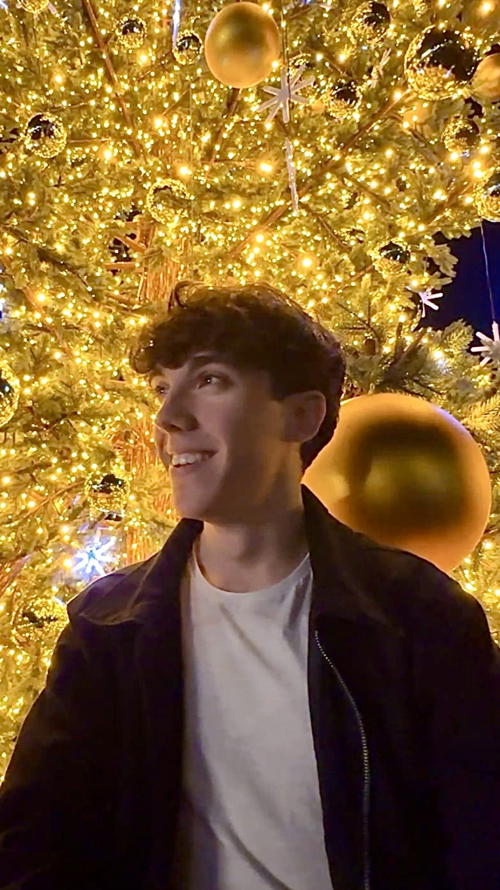

Profile
Professional Experience
2025 - 15-week Internship, Microids Studio Paris :
- Prototyping and development using Unreal Engine 5 (Blueprints, C++).
- Exploration and implementation of advanced features such as Gameplay Camera System, Game Features or Gameplay Ability System for modular content integration.
- Creation of a configurable build/tool for game designers (camera profiles, combat system, AI behavior parameters).
- Study and technical breakdown of Epic Games’ Lyra sample project.
- Gameplay development on a narrative rogue-lite game including features such as World Interactions, Dice Rolling System etc.
April 2024 - 15-week Internship, Volumic3D :
- Development of an internal web application (ColdFusion, MySQL, HTML/CSS, JavaScript).
- Research and contribution on embedded systems for 3D printers: developing machine features and interfaces (Linux, Python, Arduino, Raspberry Pi, Gtk).
- As a regular Job, Weekly maintenance and assistance with various tasks, PNS.
- Summer 2023, Retail Assistant : Managing shelves, inventory, and customer assistance, Casino.
Hard Skills
💻 - Web Development: Experienced in HTML/CSS, JavaScript, PHP, NodeJS, and Apache.
🐍 - Python Programming: Advanced knowledge gained through various projects.
👨💻 - Embedded Systems: Experiences with Arduino and Raspberry Pi (Linux, C++, Python, Gtk).
📜 - Database Management: Setup and administration across diverse environments.
🎮 - Game development: Proficient with Unity and Unreal Engine 5 including programming in C# and C++. (see Portfolio).
🐱 - Version Control: GitHub/Perforce for versioning and collaboration.
💬 - Languages: C1 English certified by the TOEIC. Also studying Korean.
Education
- KoreaTech, Cheonan, South Korea : Academic exchange in South Korea, successfully extended from one to two semesters (10 months) through strong commitment and performance.
First semester : Business Communication, Korean language (2 courses), K-Culture (history and global influence).
Second semester : Design of Intelligent Systems, Data Analysis, Algorithms and Lab, Research & Experience.
- CESI, Nice, France : Currently in the final year of engineering school (Master’s level / Bac+5), specializing in Computer Science. We are working through various projects driven by professionals.
- High School Diploma with honors, specializing in Mathematics and Computer Science. Additional option: Advanced Mathematics.
Interests
Programming, Gaming, Card Collecting, Music, Workout, Learning Korean.